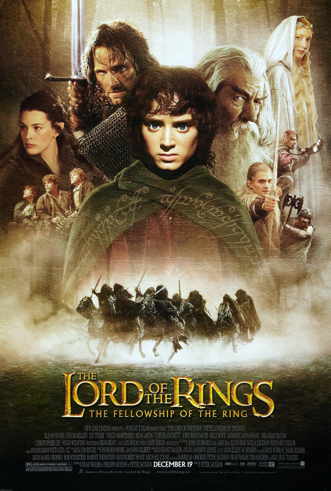

The Lord of the Rings: The Fellowship of the Ring is ranked 64th on the All-Time World Box Office list. The 2001 film, directed by Peter Jackson, adapts J.R.R. Tolkien's storyline from his epic novel and illustrates Tolkien's world in film. Tolkien's world of Elves, Orcs, Hobbits and Wizards is the setting for Frodo's journey to destroy the Ring of Power that seduces the rulers to evil.
The film's dominance in the fantasy genre is attributed to the outstanding special effects and design used to bring the fictional realm of Middle-Earth into a perceptible reality. From a cinematic perspective, the film is great because of the special effects and design that have popularized the film for decades.